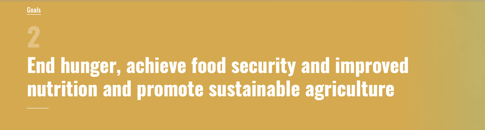
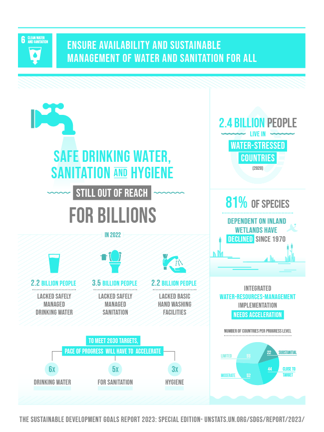
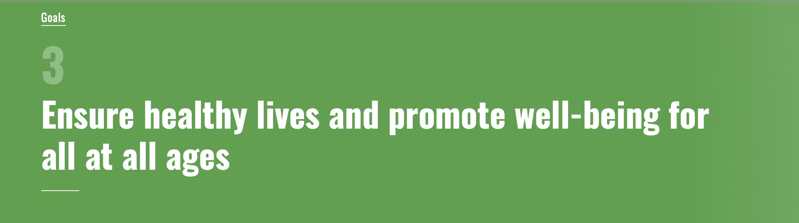
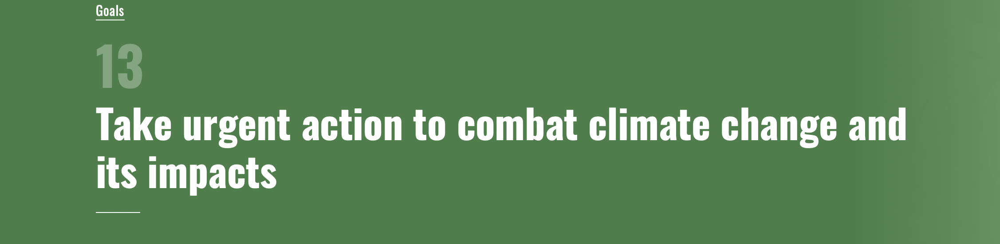
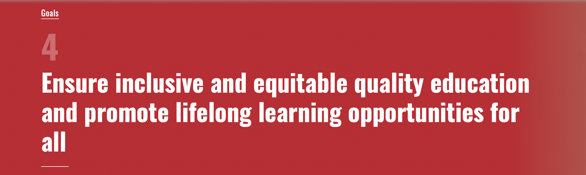
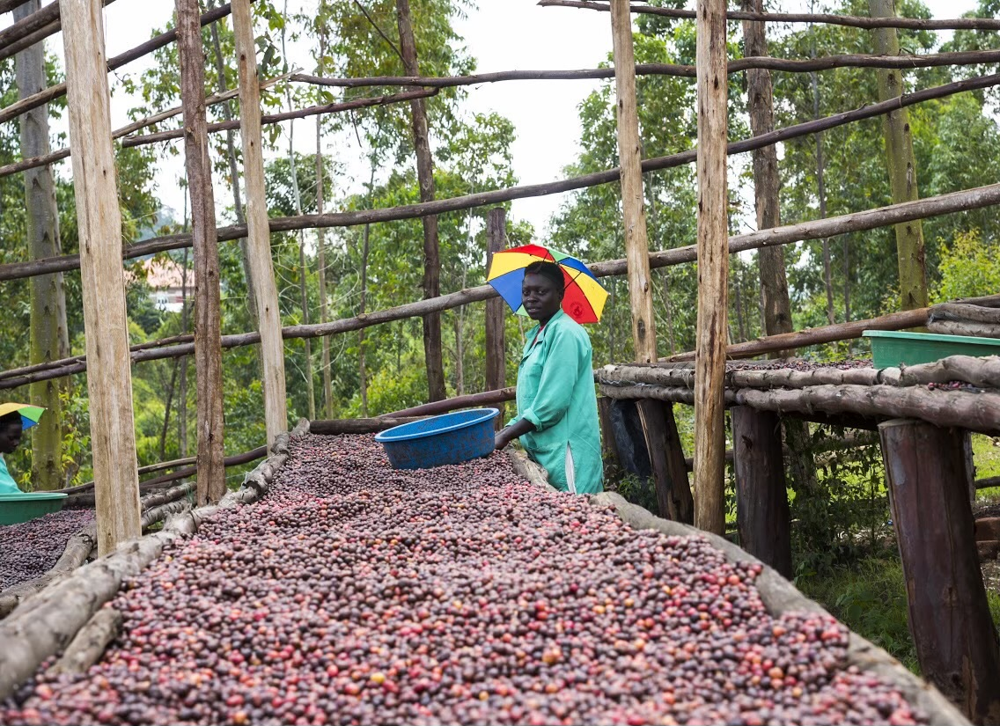

Kanungu
Main production · Processing
Primary farming communities in the rolling hills of Kanungu District. Most of our cherries are grown here and our processing facility is based in this heartland.
Kanungu District →Specialty Coffee · Uganda
We work with 3,800 smallholder farmers across Kanungu, Kisoro and Bwindi to produce top-rated specialty Arabica and Robusta — and put more money back into the communities that grow it.
Started with a simple mission
In 2012 we set out to bring specialty coffee from the highlands of southwest Uganda to the world. The area of Kanungu and its surrounding districts have been producing coffee for generations, yet historically the coffee was sold to middlemen at extremely low prices.
In partnership with groups like Temple Coffee Roasters, we trained local farmers in proper growing and harvesting. Quality improved dramatically. We built a processing facility and started exporting specialty-grade coffee.
Today we work with over 3,800 smallholder farmers. Better prices and better quality support education, health and stronger communities in the shadow of the mountain gorillas.
From farm to table across the southwest highlands

Main production · Processing
Primary farming communities in the rolling hills of Kanungu District. Most of our cherries are grown here and our processing facility is based in this heartland.
Kanungu District →
Volcanic soils · Lake Mutanda
Known for Lake Mutanda and the dramatic peaks of the Virunga range. Rich volcanic soil produces distinctive cup profiles. Gateway to gorilla trekking.
Mgahinga & Kisoro →
Gorilla habitat · High altitude
On the edge of Bwindi Impenetrable Forest — home to half of the world’s remaining mountain gorillas. Excellent conditions for specialty coffee.
Bwindi National Park →
Headquarters · Logistics
Our main offices coordinate exports, quality control and relationships with international buyers while staying connected to the highland communities.
Kampala Capital City →
Roasting · Mt Elgon region
Roasting and value-addition linked to the fertile slopes of Mount Elgon. Part of our network for specialty processing and preparation for export markets.
Explore the region →
Roasting · Western Uganda
Roasting and processing capacity in western Uganda, supporting quality from farm through to finished specialty coffee ready for partners worldwide.
Bushenyi District →Coffee companies and organisations we work with
We work with these partners in different ways — collaboration, reference, co-sales and shared quality work — alongside the 3,800+ smallholder farmers who are the heart of everything we do.
Enquire about specialty coffee, volumes, pricing & shipping
Whether you are a café, roaster, distributor or importer looking for specialty Ugandan coffee, we would love to hear from you.